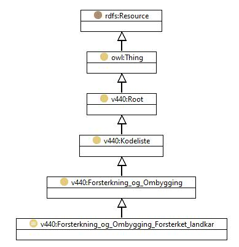

https://ontologi.atlas.vegvesen.no/v440/core/v440-owl#Forsterkning_og_Ombygging_Forsterket_landkar
Class v440:Forsterkning_og_Ombygging_Forsterket_landkar

rdf:type
owl:Class
rdfs:label
Reinforced abutments
Forsterket landkar
rdfs:subClassOf
v440:Forsterkning_og_Ombygging
owl:oneOf
[
v440:Forsterkning_og_Ombygging_Forsterket_landkar_Forsterket_landkar_forankring_i_friksjonsplate
,
v440:Forsterkning_og_Ombygging_Forsterket_landkar_Forsterket_landkar_forankring_i_nedgravd_drager
,
v440:Forsterkning_og_Ombygging_Forsterket_landkar_Forsterket_landkar_utvidelse_av_sale
,
v440:Forsterkning_og_Ombygging_Forsterket_landkar_Forsterket_landkar_utvidelse_av_sale_tilleggspeling
,
v440:Forsterkning_og_Ombygging_Forsterket_landkar_Forsterket_landkar_andre
,
v440:Forsterkning_og_Ombygging_Forsterket_landkar_Forsterket_landkar_utskifting_av_bakfyllmasser
]
v440:avsnitt
V-6.3
v440:kapittel
V-6
v440:kode
50
Instances
v440:Forsterkning_og_Ombygging_Forsterket_landkar_Forsterket_landkar_andre
,
v440:Forsterkning_og_Ombygging_Forsterket_landkar_Forsterket_landkar_forankring_i_friksjonsplate
,
v440:Forsterkning_og_Ombygging_Forsterket_landkar_Forsterket_landkar_forankring_i_nedgravd_drager
,
v440:Forsterkning_og_Ombygging_Forsterket_landkar_Forsterket_landkar_utskifting_av_bakfyllmasser
,
v440:Forsterkning_og_Ombygging_Forsterket_landkar_Forsterket_landkar_utvidelse_av_sale
,
v440:Forsterkning_og_Ombygging_Forsterket_landkar_Forsterket_landkar_utvidelse_av_sale_tilleggspeling
References
as owl:disjointUnionOf (
v440:Forsterkning_og_Ombygging
)
Generated with
TopBraid Composer
by
TopQuadrant, Inc.